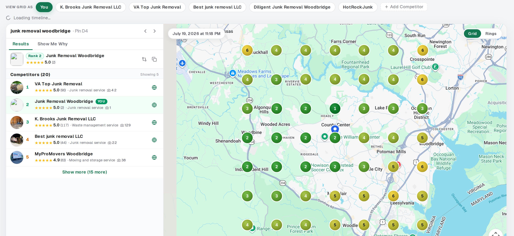
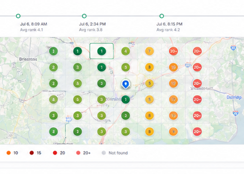
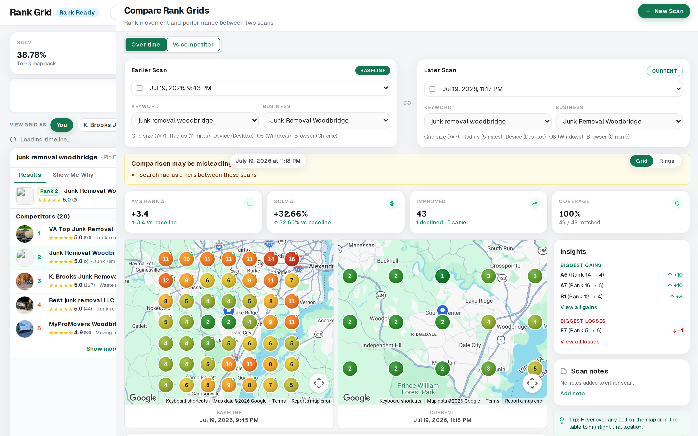

You ration map ranking scans
Every check feels expensive. So you check less than the work needs.
Local SEO Express
Google Maps GeoGrid Rank Checker scans show where a client ranks across their whole service area—so you can prove coverage, not guess from one pin drop.
Unlimited map ranking scans. No credits. Check again whenever the work needs proof.

That is the problem most freelancers and SEO consultants face. One search looks fine. Across town, the client may be gone.
A Google Maps Rank Tracker that only checks one spot hides the real story. Clients do not buy a lucky number. They buy proof they show up where people search.
When you cannot show real neighborhood coverage, clients question the work. Retainers get harder to keep.

You hesitate to re-scan. You wait. You skip the check after real work. Then the client asks for proof—and you are short.
Credits turn ranking checks into a cost. Freelancers and solo consultants feel that first.
Local SEO Express gives you unlimited map ranking scans. No credits. Full GeoGrid proof. Reports clients can follow.
Click a cell. See who showed up from that spot. Walk the client through it in plain words.
| Business | Avg | Top 3 |
|---|---|---|
| You | 3.2 | 38% |
| Competitor A | 2.1 | 52% |
| Competitor B | 4.8 | 24% |
See who beats your client on the same scan. Focus work where you can still push into the top 3.
Rank Trend
Compare past scans to new ones. Show what improved, what slipped, and what stayed flat.
Ranking data means more when you see who is ahead. Compare your client against the businesses showing above them.

Some competitors win only in one part of town. Others own the whole map. Show the difference fast.
Most tools stop at the chart. We turn Maps data into next steps clients can approve.
Local SEO is not only a website. Trust in the community matters too. Find sponsorships, clubs, and events that build authority where your client serves.
Built for solo consultants and small freelance agencies. You need clear proof, clean reports, and unlimited scans without credit stress.
A basic checker shows one result. Here you get the full local view—grid proof, competitor compare, reviews, and the next work to sell.
Reports should not need a translator. Show map coverage, rank movement, and the next steps in plain language.
Green areas show strength. Weak areas show the next job. That is how solo consultants keep trust—and close the next month of work.